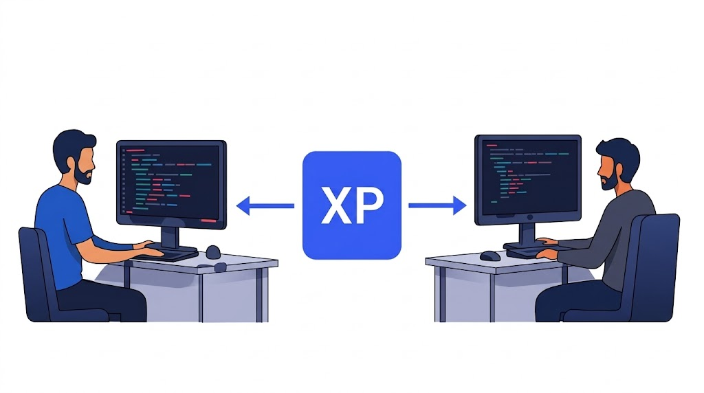

1. Planejamento Ágil (Scrum)
O Scrum é um framework ágil para gerenciar projetos complexos, focando em entregas incrementais e colaboração contínua. Ele se baseia em ciclos curtos (Sprints) que permitem adaptação rápida às mudanças e maior transpência para todos.
Product Backlog
Lista priorizada de funcionalidades e requisitos do produto.
Sprint
Iterações de tempo fixo (geralmente 2-4 semanas).
Daily Scrum
Reunião diária de 15 min para sincronizar o time.
2. Engenharia Extrema (XP)
A Extreme Programming (XP) é uma abordagem ágil que visa melhorar a qualidade do software e a capacidade de resposta a mudanças. Baseia-se em valores como comunicação, simplicidade, feedback e coragem para criar software de alta qualidade.

- Programação em Par
- Testes Automatizados
- Integração Contínua
- Programação em Par
- Refatoração
- Simplicidade
- Feedback Contínuo
3. Behavior-Driven Development (BDD)
BDD é uma prática que alinha o desenvolvimento de software com as necessidades do negócio. usando uma linguagem ubíqua. Testes são escritos em linguagem natural, facilitando a comunicação entre desenvolvedores e stakeholders.
Dado que o usuário esta autenticado
Quando ele acessa o painel principal
Então ele deve ver o resumo das suas atividades
4. Test-Driven Development (TDD)
TDD é uma abordagem onde os testes são escritos antes do código de produção. O ciclo Red-Green-Refactor garante código funcional, seguro e de qualidade.
Red
Escreva um teste que falha.
Green
Escreva o código mínimo para passar no teste.
Refactor
Melhore o código mantendo os testes passando.
5. Métricas e Benefícios da Adoção
| Métrica | Sem Metodologias | Com Metodologias | Melhoria |
|---|---|---|---|
| Taxa de Entrega | 45% | 92% | 104% |
| Defeitos em Produção | 28% | 5% | 82% |
| Satisfação do Cliente | 65% | 96% | 48% |
| Tempo de Resposta | 14 dias | 3 dias | 79% |
6. Dúvidas Frequentes
Qual a diferença entre Scrum e XP?
Posso usar BDD sem TDD?
Por que TDD melhora a qualidade?
Essas metodologias funcionam juntas?
Por onde começar?
7. Fale Conosco
Tem alguma dúvida ou sugestão
Nossa equipe está pronta para ajudar você a evoluir na sua jornada de aprendizado.
Comece seu Desafio!
Teste seus conhecimentos sobre as metodologias modernas e veja como está na sua compreensão sobre o assunto.
Começar Quiz